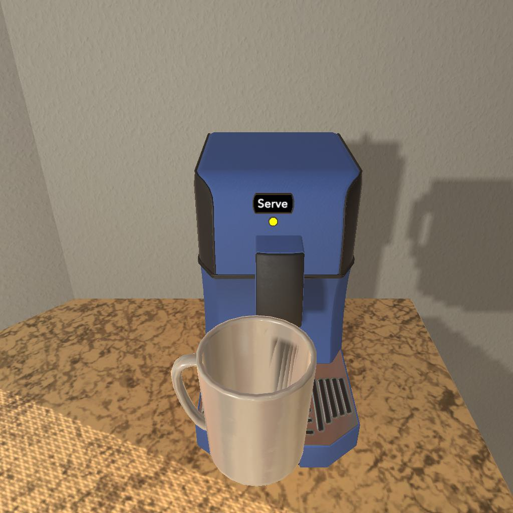
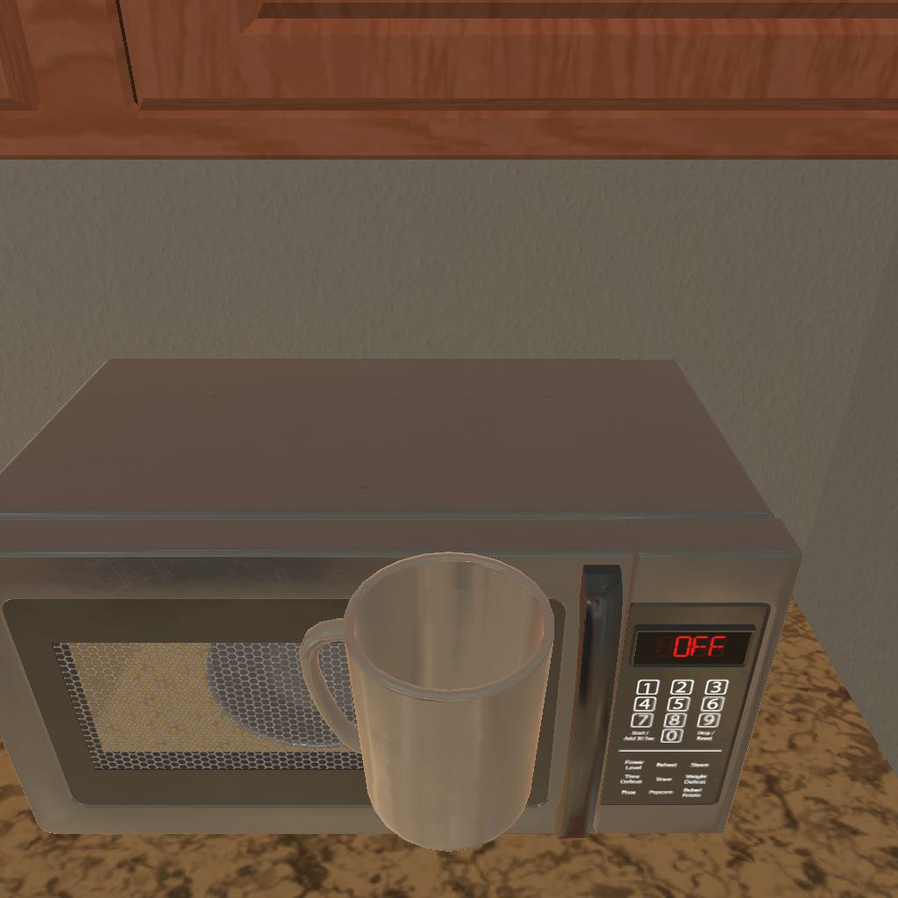

---------------------------------------------------------task: 23---------------------------------------------------------
--------------------------------------------------------------------------------------------------------------------------------------------------------------------
--------------------------------------------------------------------------------------------------------------------------------------------------------------------
Step:--------------------------------------------------------------------------8-------------------------------------------------------------------------------
----------------------------------------
VLM Prompt:
Image1:
Image2:
Image3:
**Instruction**
1. Analyze the provided images to identify all visible household objects and compare the difference between images (e.h. whether the object is opened or not and taken on hand or not), focusing on those relevant to the task description "put a hot mug in coffeemachine."
2. Use the analysis of images and the task hint "The agent must find an object of the desired type, pick it up, go to a microwave, heat the object with the microwave, then find the correct location to place it, and put it down there. The agent does not need to use the microwave button or open the microwave to heat the object, and the agent just needs to do action that is "heat the object with the microwave"." to answer the question: what is the most reasonable action in the choices for the task description "put a hot mug in coffeemachine"?
3. Decide and write the answer using the template: The answer is: (i): , where i is the real number. If there is no desired object in images, search every place based on **Initial Observation** to find the object. And if no one is exactly correct, choose a similar answer.
**Initial Observation**
You are in the middle of a room. Looking quickly around you, you can see cabinet (1-15), fridge (1), countertop (1-4), drawer (1-4), microwave (1), toaster (1), coffeemachine (1), garbagecan (1), sink (1), stoveburner (1-3), sinkbasin (1)
**Answer Choices**
(1): go to cabinet 1
(2): go to cabinet 2
(3): go to cabinet 3
(4): go to fridge 1
(5): go to countertop 1
(6): go to cabinet 4
(7): go to cabinet 5
(8): go to cabinet 6
(9): go to cabinet 7
(10): go to drawer 1
(11): go to drawer 2
(12): go to cabinet 8
(13): go to drawer 3
(14): go to cabinet 9
(15): go to cabinet 10
(16): go to drawer 4
(17): go to cabinet 11
(18): go to toaster 1
(19): go to cabinet 12
(20): go to cabinet 13
(21): go to cabinet 14
(22): go to cabinet 15
(23): go to countertop 2
(24): go to coffeemachine 1
(25): go to garbagecan 1
(26): go to countertop 3
(27): go to countertop 4
(28): go to sink 1
(29): go to stoveburner 1
(30): go to stoveburner 2
(31): go to stoveburner 3
(32): go to sinkbasin 1
(33): open microwave 1
(34): close microwave 1
(35): put mug 1 in/on microwave 1
(36): examine mug 1
(37): examine microwave 1
**Answer**
Let's think step by step by following the instructions.
----------------------------------------
----------------------------------------
Original Response:
Image Analysis:
- Image 1 shows a coffeemachine with a mug placed under its dispenser. The coffeemachine is closed, and the mug is empty.
- Image 2 and Image 3 are identical, showing a microwave with a mug placed next to it. The microwave is off and closed, and the mug is empty.
Task Description Analysis:
The task description "put a hot mug in coffeemachine" suggests that the mug needs to be heated before being placed in the coffeemachine. Based on the task hint, we know that the agent must find a mug, heat it in the microwave, and then place it in the coffeemachine.
Most Reasonable Action:
Given the analysis and the task hint, the agent should first ensure the mug is hot, which requires using the microwave. Since the images show an empty mug next to a microwave, the most reasonable action would be to heat the mug with the microwave. However, we are told that the agent does not need to use the microwave button or open the microwave to heat the object. Therefore, the action of heating the mug is abstracted away, and we can assume the mug is already hot.
Since the mug is already placed next to the microwave and we assume it's hot, the next reasonable action is to place the hot mug in the coffeemachine. The mug is visible (mug 1), and the coffeemachine is also visible (coffeemachine 1). No other actions like going to cabinets or countertops are necessary as we already have the mug and the coffeemachine in sight.
The answer is: (24): go to coffeemachine 1
----------------------------------------
----------------------------------------
>>> Refine Original VLM Response and Get Pure Action: go to coffeemachine 1
----------------------------------------
-----------------------------------------------------------------
Running time: 69.6770372390747 seconds
Total Money: 14.552769999999999
-----------------------------------------------------------------
-----------------------------------------------------------------
Text Observation:You arrive at loc 24. On the coffeemachine 1, you see nothing.
-----------------------------------------------------------------
UNSUCCEED